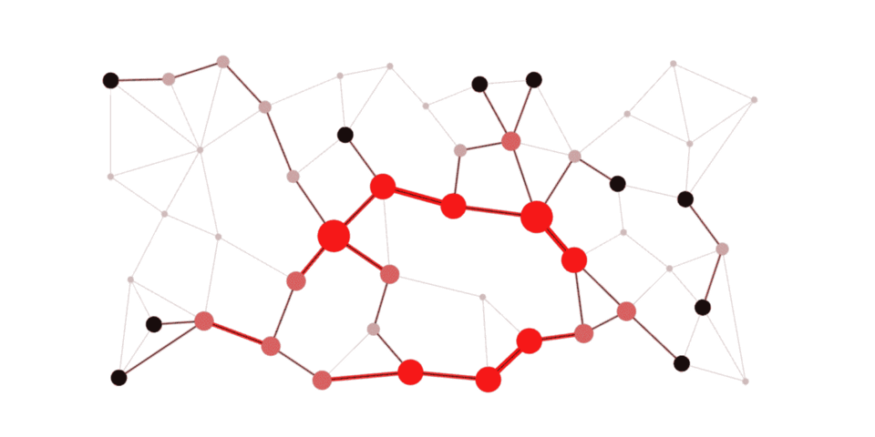

Applications of graphs
This website presents 7 real world applications of the theory of graphs. I chose this topic for this website because I feel that graphs are being neglected throughout high school, being regarded as something very abstract with no practical use. I hope that by creating this website I can change this way of thinking and prove that out world as we know it wouldn't have been the same if graphs hadn't existed.
Each and every lesson has code attached to it (or an explanation video) in order to help the reader understand the concept better.
The topics that I decide to include in this website are:
